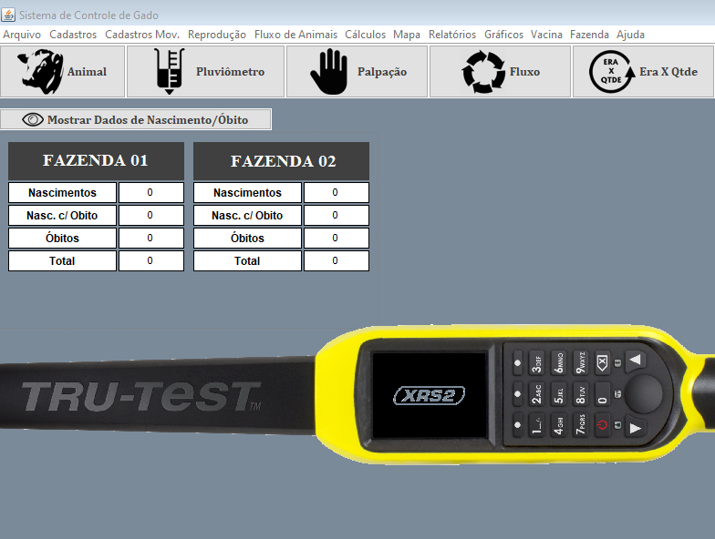

PROJETOS & HABILIDADES
Sistema de Controle de Rebanho
Java Desktop (Full-Stack)
Sistema desenvolvido para gerenciamento de rebanho de duas fazendas. Seu foco era obter uma análise de todo o gado para uma preparação para a Vacinação Semestral Obrigatória. Na vacinação, o Leitor Eletrônico XRS2 fazia a coleta dos dados em campo, assim, um módulo foi desenvolvido para fazer a importação desses dados para o sistema a cada vacina.
- Cadastros de Nascimentos, Óbitos, Vendas/Compras;
- Controle Vacinal;
- Controle Pluviométrico;
- Relatórios Analíticos por idade, raça, sexo, etc.

Sistema de Gerenciamento de Operações Agrícolas
Java Desktop (Full-Stack)
Desenvolvi um sistema para gerenciamento de operações agricolas de uma fazenda. As principais funções deste software eram cadastrar as operações realizadas no campo através de um mapa da fazenda, ou seja, cada operação era definida por uma cor no mapa, assim era possível a criação de uma legenda automática que media também a área referenciada. Também era possível manter um histórico de mapas para consultas futuras. Foi utilizada a linguagem Java, o gerenciador de Banco de Dados PostgreSQL, o gerenciador de relatórios IReport e a IDE Eclipse para o seu desenvolvimento.
Sistema de Compras
Java Desktop (Full-Stack)
Desenvolvi um software para o controle de compras de uma fazenda. A principal função deste sistema era cadastrar as cotações dos produtos/peças, cada cotação buscava o último valor e local onde foi comprado cada item, calculava o item mais barato em cada fornecedor e calculava o menor valor que podera ser alcançado com base nos valores de todos os fornecedores. Para desenvolve-loutilizei a linguagem Java, o gerenciador de Banco de Dados PostgreSQL, o gerenciador de relatórios IReport e a IDE Eclipse. Também foi desenvolvido parcialmente em HTML5, CSS3, SpringBoot e Thymeleaf
XML
Analisador XML
Desenvolvi um analisador de XML que recebia como entrada todos os arquivos de folha de pagamento do e-Social (S-1200)e tinha como saída um relatório no formato .csv, com todas a rúbricas enviadas, seus valores e suas incidências, separadas por funcionário. Apenas a linguagem Java e a IDE Eclipse foram utilizadas.
Desenvolvimento PHP Web
Sistema de controle de serviços
Estou desenvolvendo um sistema para o gerenciamento de uma Estética Automotiva. Seu principal objetivo é fazer o controle dos serviços prestados. Está sendo desenvolvido na linguagem PHP, com o gerenciador de Banco de Dados PostgreSQL e com as tecnologias HTML5/CSS3.
Desenvolvimento Javascript Web
Sistemas diversos
Desenvolvi uma Calculadora, um App que mostra o tempo em qualquer cidade através do consumo da Weather API, uma Landing Page, alguns modelos para telas de Login, entre outros, que estão todos no meu GitHub e foram desenvolvidos para aprendizado. Utilizei diversas tecnologias Web nesses projetos, entre elas estão: Javascript, PHP, HTML5, CSS3, Bootstrap e React. Todas foram desenvolvidas com o Visual Studio Code.